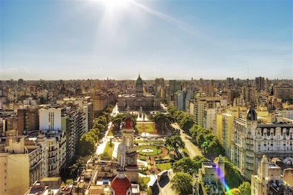

I am currently studying at Bocconi University in Milan for my master in management.
| City | Description |
|---|---|
|  |
Buenos AiresBuenos Aires is the capital and most populous city of Argentina. The city is located on the western shore of the estuary of the Río de la Plata, on the South American continent's southeastern coast. |
ShanghaiShanghai is one of the four direct-controlled sermunicipalities of China and the most populous city proper in the world, with a population of more than 24 million as of 2017.It is a global financial centre and transport hub, with the world's busiest container port. |
|
New York CityNew York City (NYC) is the most populous city in the United States.With an estimated 2017 population of 8,622,698 distributed over a land area of about 302.6 square miles (784 km2),New York City is also the most densely populated major city in the United States. |
This page has been coded during the FullStack program @LeWagon. That was probably the best experience of my entire life.